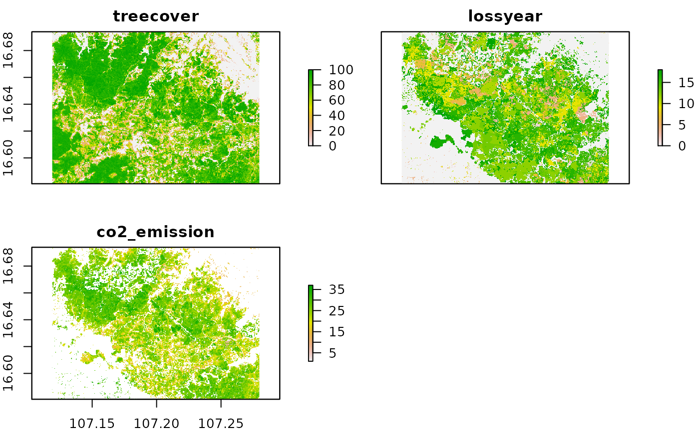
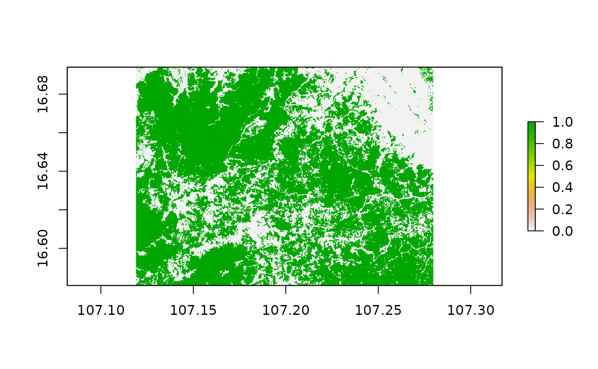
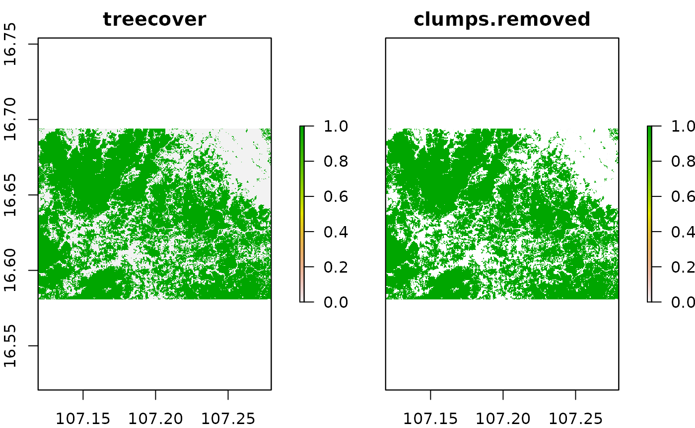
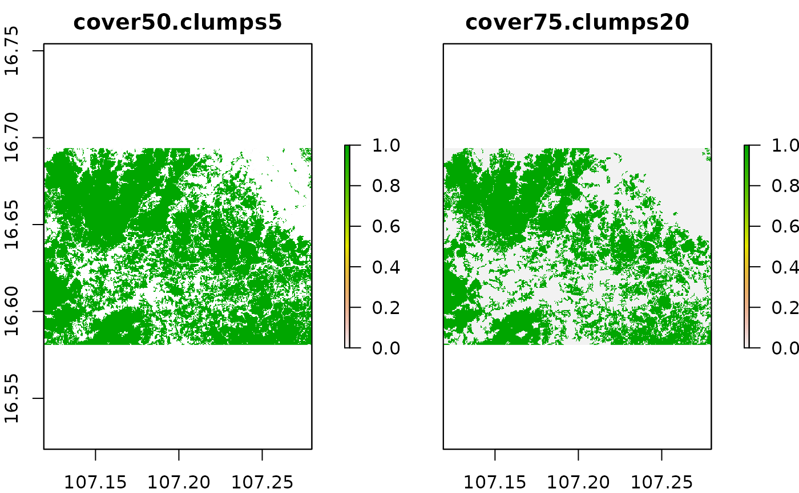
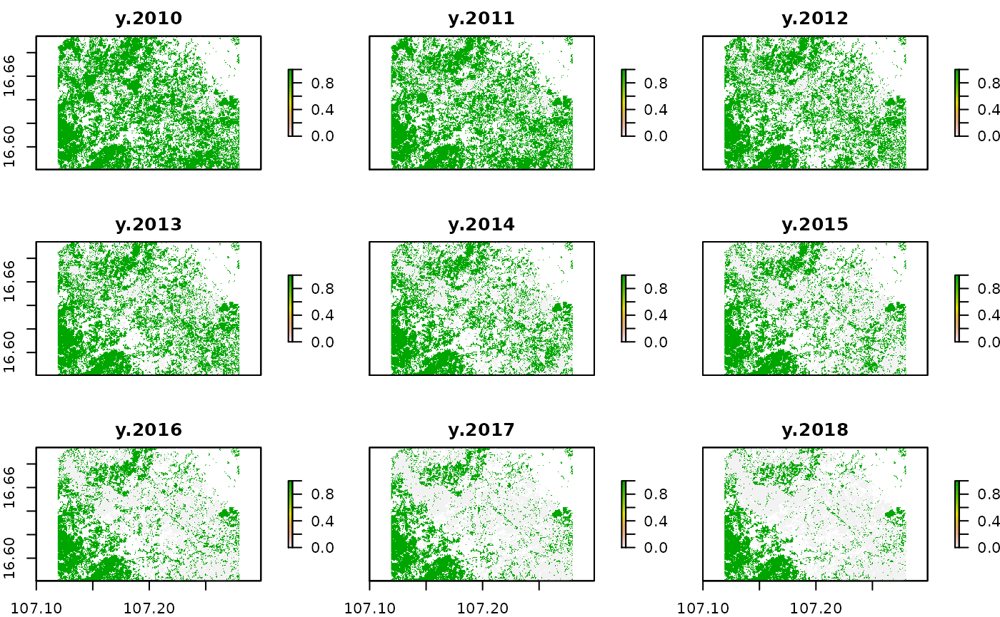
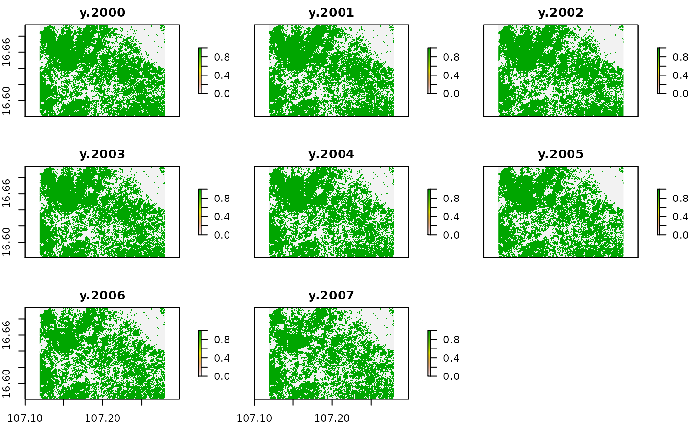

GFW.Rmd
library(raster)
library(igraph)
library(tibble)
library(sf)
library(magrittr)
library(dplyr)
library(tidyr)
library(ggplot2)
library(stringr)
library(mapme.forest)Global Forest Watch makes available global data products produced by Hansen et al (2013) by examining Landsat satellite data to characterize global forest extent, annual loss, and gain. These data and their annual updates provide spatially detailed information on forest cover. However, some challenges arise when using Earth Observation (EO) to assess trends in forest loss. In the context of forest conservation, spatial statistics can assist in quickly identifying spatio-temporal trends of forest loss without the explicit need for pre-existing information on what underlying factors are driving these trends. However, there remains the challenge to distinguish between loss of forest cover caused by intentional clearing and loss of forest due to natural disturbances.
We can find following data layers in the GFW data set:
‘Treecover2000’: This layer gives the tree canopy cover for year 2000, defined as canopy closure for all vegetation taller than 5m in height, measured in percentage ranging from 0 to 100 percent
‘Loss’: This layer gives the tree cover loss during the study period, defined as a complete stand-replacement disturbance (i.e., a change from a forest to non-forest state).
‘Gain’: Tree cover gain summarized during the period 2000–2012, defined as the inverse of the information contained in the ‘Loss’ layer (a non-forest to forest change entirely within the study period)
‘Lossyear’: Year of gross tree cover loss event. Tree cover loss during the study period, defined as a stand-replacement disturbance, or a change from a forest to non-forest state. Encoded as either 0 (no loss) or else a value in the range 1–18, representing loss detected primarily in the year 2001–2018
The conceptual challenge with this data set is that the overall losses and gains are provided as gross estimates between the year 2000 and 2018. This means that we cannot obtain annual maps of forest losses and gains to retrieve annual net deforestation values. We can, however, derive a gross estimate of forest clearance by using the loss year layer. Here, every stand-replacement disturbance is associated to a specific year in the time series 2000-2018, so we can obtain binary forest loss maps for every year. It is important to note that the possibility of forest gains during the time series is not accounted for in this approach. This is a shortcoming, however it was chose to deliver inexpensive but reliable first insights into deforestation dynamics.
We can download the data for any given area of interest presented to the download function as an sf-object. With the basename variable we can specify any character string with which is prepended to the file names. The specification of the dataset variable defines which version of the GFW to download. The default is version 1.6 which tracks forest cover dynamics between 2000 and 2018. A newer version (1.7) which also includes the year 2019 is already available. Simply change the dataset variable to “GFC-2019-v.1.7”. The variable outdir specifies where to put the final merged raster files, because single tiles are first downloaded into the .tmpdir directory and then mosaiced through a gdal system call. You can choose to keep the single tiles by specifying keepTmpFiles = TRUE if you wish to keep them for future analysis. When a specific tile is needed for the requested area of interest, but already found in the .tmpdir, it is not going to be downloaded again. This can come in handy if you work on different projects, e.g. in the same country. Note, that the CO2 dataset has a limited availability because this dataset is roughly present for the tropics and subtropics between 30N and 30S. You can check the availability . In cases where there is no CO2 data for the requested AOI, the function will not issue a warning but simply append an empty CO2 raster. This does not mean that in these areas there has not been any CO2 emissions trough forest cover clearing but simply that it was not measured in the data source.
# read in polygons of interest
aoi = st_read(system.file("extdata", "aoi_polys.gpkg", package = "mapme.forest"))
# download GFW data for the area of interest
raster_files = downloadfGFW(shape = aoi,
basename = "pkgTest",
dataset = "GFC-2018-v1.6",
outdir = "../data/",
keepTmpFiles = T,
.tmpdir = "../data/tmp")
# in case the projection between aoi and the downloaded rasters is different,
# we need to reproject the aoi object
aoi = st_transform(aoi, crs = st_crs(raster(raster_files[1])))
# crop the rasters to the extent of the aoi
rasters = stack(lapply(raster_files, function(f){
f = brick(f)
f = crop(f, aoi)
}))
# assigning proper names to the layers and simply plot the results
names(rasters) = c("co2_emission", "lossyear", "treecover")
plot(rasters)
We can use the loss year layer and the tree cover layer for the year 2000 to calculate binary tree cover maps while modeling different forest definitions. For this usage we developed an simple interface to an R routine doing the work for us called prepTC().
prep_treeCover = prepTC(inputForestMap = rasters$treecover,
thresholdCover = 75,
thresholdClump = 20)This function applies both, the classification to a binary raster by applying a cover threshold and removing clumps of raster cells smaller than a given threshold. The routine is also able to apply only either one of these tasks. Note, however, that the functions to calculate areal statistics expect binary rasters as input. Next, we are going to explain in detail how both of these thresholds are applied.
We can see the tree cover map for the year 2000 which is coded in percentage of tree canopy coverage between 0 and 100. Using that information, we are able to apply a threshold reclassification to model national forest definitions, for example a tree canopy larger that 50% of the ground’s surface. For the loss year layer, most of the pixels are plotted in a grayish color. Those are the pixels having a value of 0 meaning that no tree cover loss was observed in the time series 2000 to 2018. From redish to green, the other pixels indicate the year when forest loss occurred. We are going to use this information to retrieve annual forest maps in conjunction with the tree cover layer for the base year 2000. However, we take a look at the effect of applying a threshold filtering to the tree cover layer first.
treeCover_binary = rasters$treecover
treeCover_binary[rasters$treecover< 50 ] = 0
treeCover_binary[rasters$treecover>= 50] = 1
plot(treeCover_binary)
We applied a threshold for tree cover of 50% and recoded all values below to 0 while all values equal or greater than our threshold to 1. This way we obtained a binary forest mask for the year 2000 corresponding to our forest definition of 50% tree canopy over the soil surface.
Some national agencies as well as international organizations might concentrate their efforts and definitions in forest conservation to areas with a minimum size of comprehensive tree cover. To account for this we can apply a clump detection. This algorithm basically assigns an increasing value starting from 1 to every comprehensive clump it finds in the data. When all the pixels of one clump were assigned with the same value and no more pixels are adjacent to any pixels in the clump, the algorithm jumps to the next clump and assigns these pixels a value increased by one. For our sample area, this looks like this:

Most of the pixels show the same greyish colour, indicating that they are compromised in one and the same clumps, however, we can observe increasing raster cell values from North to South for some minor areas. This means that the algorithm started to distribute number for clumps in the North and then slowly moving downwards to the South until every pixel was associated with a clump. By taking a look at the frequency a certain clump class occurs in this new data set, we can apply another threshold to remove clumps which are smaller than our desired value. For this to work as expected, we have to take into account the cell size of our raster data. To interpret the cell size we additionally need information on the coordinate reference system (CRS) our data currently is represented in.
st_crs(treeCover_clumps) # retrives the coordinate reference system
#> Coordinate Reference System:
#> User input: +proj=longlat +datum=WGS84 +no_defs
#> wkt:
#> GEOGCRS["unknown",
#> DATUM["World Geodetic System 1984",
#> ELLIPSOID["WGS 84",6378137,298.257223563,
#> LENGTHUNIT["metre",1]],
#> ID["EPSG",6326]],
#> PRIMEM["Greenwich",0,
#> ANGLEUNIT["degree",0.0174532925199433],
#> ID["EPSG",8901]],
#> CS[ellipsoidal,2],
#> AXIS["longitude",east,
#> ORDER[1],
#> ANGLEUNIT["degree",0.0174532925199433,
#> ID["EPSG",9122]]],
#> AXIS["latitude",north,
#> ORDER[2],
#> ANGLEUNIT["degree",0.0174532925199433,
#> ID["EPSG",9122]]]]
res(treeCover_clumps) # gives the cell size in x and y direction
#> [1] 0.00025 0.00025We can see that our data is represented in geographic coordinates, based on the geographic datum and reference ellipsoid WGS84. This means that the units of our pixels resolution needs to be interpreted as degrees because the data was not projected to a planar coordinate system. We could do this now, to apply our threshold in terms of meters or hectares. But we can also estimate our desired threshold based on degrees. At the equator, one degree in East-West direction (x) is equal to 100km. In kilometers, this distance is reduced the closer we get to the poles. This means that our pixel size in meters is approximately 25 ~ 30 meters. Now, if we want to filter for forest areas which are at leas 5 ha in size, we need to translate this into the number of pixels which represent a clump of that desired size. One pixel has 30m x 30m = 900m², a forest area of 5ha * 10,000m²/ha = 50,000m², so 50,000m² / 900m² = 5.55 pixels. So here we choose a threshold of a minimum size of 6 pixels. First, however we use the freq-function to calculate the number of occurrences per clump class in our raster. Then, we can filter for values which show occurrences lower to our threshold and set them to 0.
frequencies = data.frame(freq(treeCover_clumps)) # gets frequency per value
filt_frequencies = frequencies [which(frequencies $count >= 6), ] # selects only those values with frequencies > 5
filt_frequencies = as.vector(filt_frequencies $value) # to vector
treeCover_clean = treeCover_clumps # initiate clean raster
names(treeCover_clean) = "clumps.removed"
treeCover_clean[!treeCover_clean %in% filt_frequencies] = 0
treeCover_clean[treeCover_clean != 0] = 1
plot(stack(treeCover_binary, treeCover_clean))
We can observe some differences in the resulting output of the two rasters with smaller patches of forest removed from the right hand raster. We now compare the results of our manually applied processing to the results we obtained with calling the function prepTC() at the very beginning of this tutorial.
names(prep_treeCover) = "cover75.clumps20"
names(treeCover_clean) = "cover50.clumps5"
plot(stack(treeCover_clean, prep_treeCover))
The next step is to retrieve pseudo-yearly forest cover maps from the loss year layer. For this step, too, we create a R routine which eases this process significantly. It can be applied directly to an input of the forest cover map from the base year and the loss year layer. Note, that the years vector indicates the years which are present in the loss year layer excluding the base years specified as input.
yearlyForestMask = getTM(inputForestMap = treeCover_clean,
inputLossMap = rasters$lossyear,
years = 2001:2018)But what would the workflow look like, if we were doing it manually? We use the first raster layer we obtained by applying the threshold pre-processing as our base layer for the year 2000. We then recode the value 0, which represents no forest loss in the entire time series to NA. Then, we loop through the remaining year values from 1 to 18 and reclassify all pixels in our base tree cover layer to 0 which are equal or lower to the current year value in the loss year layer.
# set value of 0 to NA
rasters$lossyear[rasters$lossyear == 0] = NA
# mask lossyear layer to our binary mask so onyl valid pixels remain
rasters$lossyear = mask(rasters$lossyear, treeCover_clean)
# vector of values found in loss year, 1 : 2001, 2: 2002 ... 18: 2018
unis = 1:18
# initiate the yearlyForestMask raster stack with the binary layer for 2000
yearlyForestMask = treeCover_clean
# loop trough the year values and set them to 1 in case they are
# lower or equal to the current value (Forest Loss) or 0 when
# they are greater (no forest loss during that year)
for (u in unis){
tmpLS = rasters$lossyear
tmpLS[tmpLS <= u] = 1
tmpLS[tmpLS > u] = 0
# set the pixels in the binary forest mask to 0 which
# showed forest loss in the current year of years before
tmpTC = treeCover_clean
tmpTC[tmpLS == 1] = 0
# add the resulting layer to the raster stack
yearlyForestMask = addLayer(yearlyForestMask, tmpTC)
}
# renaming and simple plot
names(yearlyForestMask) = paste("y", 2000:2018)
plot(yearlyForestMask[[11:19]])
With this processes we retrieved a yearly binary forest mask. Note that at this stage we only applied our threshold for the minimal mapping unit for the base year in 2000. In cases we want to apply the same threshold to the remaining years an additional working step is needed.
for (l in 1:nlayers(yearlyForestMask)){
yearlyForestMask[[l]] = prepTC(yearlyForestMask[[l]], thresholdClump = 5)
}
plot(yearlyForestMask[[1:8]])
It is hard to tell exact differences between the raster layers. Therefore we do a quick pixel count of pixels representing forest as an estimation of the forest area.
as.data.frame(yearlyForestMask) %>%
summarise_all(sum, na.rm=TRUE) %>%
gather("year","value") %>%
mutate(year = str_sub(year, -4, -1)) %>%
ggplot(aes(x= year, y=value))+
geom_point(stat="identity")+
ylab("Number of forest pixels")+
xlab("Year of Observation")+
theme_minimal()